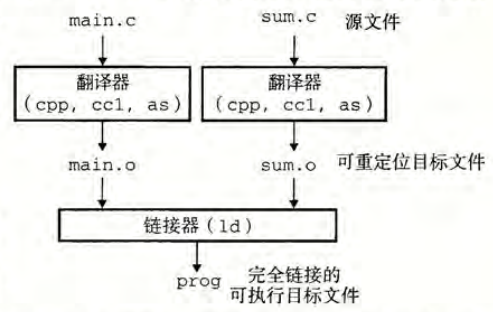
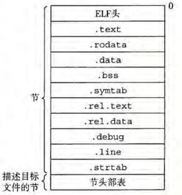
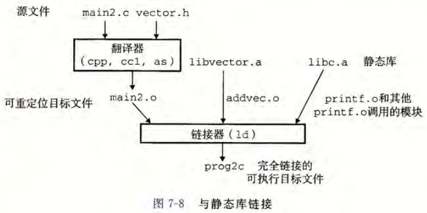
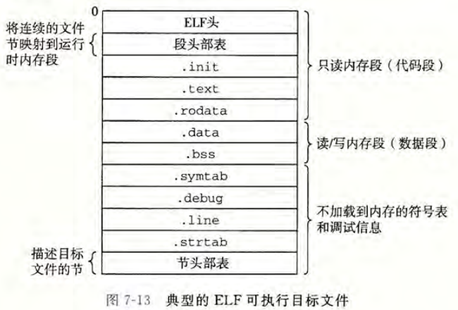
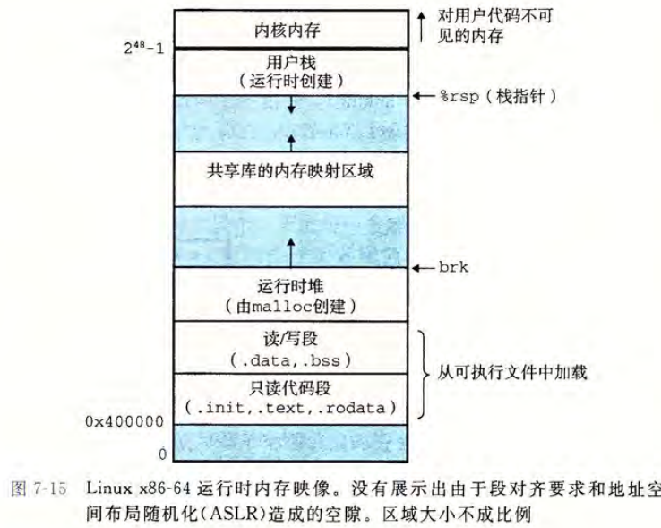
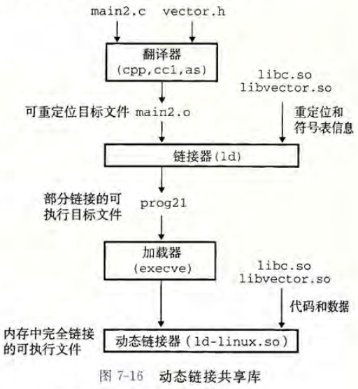

本章是对《CS：APP》第7章链接的阅读笔记，包括一个应用程序是如何加载到实际运行的。
一、编译器驱动程序
编译器驱动程序包括语言预处理器，编译器，汇编器和链接器。

gcc -0g prog main.c sum.c
首先是预处理器，驱动程序将源程序翻译成一个ASCII码的中间文件.i，接着是编译器，将.i文件翻译成一个ASCII码的汇编语言文件.s，然后使用汇编器将main.s翻译成一个可重定位的目标文件.o。上数对驱动程序对单个翻译单元所做的事。最后运行链接器程序将所有的.om目标文件组合起来创建一个可执行的目标文件，后续通过./进行执行。
二、静态链接和动态链接
链接器将一组可重定位目标文件作为输入，生成一个完全链接的、可以加载和运行的可执行目标文件。目标文件有多个代码和数据节组成，指令、初始化的数据、未初始化的数据。连接器的两个主要的工作是：符号解析和重定位。
目标文件主要包括以下几个部分：

.text: 已编译程序的机器代码。
.rodata: 只读数据.
.data: 已初始化的全局和静态变量。
.bss: 未初始化的全局和静态 C 变量，以及所有被初始化为 0 的全局或静态变量。在目标文件中这个节不占据实际的空间，它仅仅是一个占位符。
2、符号和符号表:
全局符号：
由模块 m 定义并能被其他模块引用的全局符号：对应于非静态的 C 函数和全局变量。例子：int global_var;，void global_func();
外部符号：
由其他模块定义并被模块 m 引用的全局符号：这些符号称为外部符号。对应于在其他模块中定义的非静态 C 函数和全局变量。例子：extern int external_var;，extern void external_func();
局部符号：
只被模块 m 定义和引用的局部符号：对应于带 static 属性的 C 函数和全局变量。这些符号在模块 m 中任何位置都可见，但不能被其他模块引用。例子：static int local_var;，static void local_func();
3、符号解析
对全局符号的引用时，当编译器遇到一个在当前模块中未定义的符号时，会假设该符号在其他模块中定义。链接器在所有输入模块中查找该符号的定义。如果找不到定义，链接器输出一条错误信息并终止。
在编译过程中，编译器向汇编器输出每个全局符号，标记为强（strong）或弱（weak），汇编器将此信息编码在可重定位目标文件的符号表中。
符号的强弱属性：
强符号：函数和已初始化的全局变量。弱符号：未初始化的全局变量。
多重定义的符号处理规则：
规则 1：不允许有多个同名的强符号。
规则 2：如果有一个强符号和多个弱符号同名，选择强符号。
规则 3：如果有多个弱符号同名，从这些弱符号中任意选择一个。
与静态库的链接：

gcc -c addvec.c multvec.c
ar rcs libvector.a addvec.o multvec.o
gcc -c main2.c
gcc -static -o prog2c main2.o ./libvector.a
4、重定位程序
一旦链接器完成了符号解析这一步，就把代码中的每个符号引用和正好一个符号定义关联起来。
重定位步骤包括以下两个主要阶段：
链接器将所有相同类型的节合并为同一类型的新聚合节，并为每个符号分配运行时地址。
合并节：
链接器将来自所有输入模块的相同类型的节合并成一个节。例如，所有输入模块的 .data 节被合并成一个 .data 节，成为输出的可执行目标文件的一部分。
分配运行时内存地址：
链接器为新的聚合节、输入模块定义的每个节以及输入模块定义的每个符号分配运行时内存地址。完成这一步后，程序中的每条指令和全局变量都将有唯一的运行时内存地址。
重定位节中的符号引用
在这一步中，链接器修改代码节和数据节中对每个符号的引用，使其指向正确的运行时地址。
通过这两个步骤，链接器完成了程序的重定位，确保所有符号引用都能正确地指向其定义的运行时地址。
完成后的ELF文件为：

三、加载可执行目标文件
Linux 系统
中的每个程序都运行在一个进程上下文中，有自己的虚拟地址空间。当 shell 运行一个程序时，父 shell 进程生成一个子进程，它是父进程的一个复制。子进程通过统调 用启动加栽器。加载器删除子进程现有的 虚拟内存段，并创建一组新的代码、数据、堆和栈段。新的栈和堆段被初始化为零。通过将虚拟地址空间 中的页映射到 可执行文件的页大小的片chunk, 新的代码和数据段被初始化为可执行文件的内容。最后，加载器跳转到_start地址，它最终会调用应用程序的 main 函数。除了一些头部信息，在加载过程中没有任何从磁盘到内存的数据复制。直到 CPU 引 用一个被映射的虚拟页时才会进行复制，此时，操作系统利用它的页面调度机制自动将页面从磁盘传送到内存。

四、动态链接共享库
共享库是解决静态库缺陷的一种现代创新产物。它是一个目标模块，在运行或加载时，可以加载到任意的内存地址，并与内存中的程序链接起来。这个过程称为动态链接（Dynamic Linking），由动态链接器（Dynamic Linker）程序执行。

gcc -shared -fPIC -o libexample.so example.c
gcc -o main main.c -L. -lexample
export LD_LIBRARY_PATH=.
./main
共享库（Shared Library）的基本思路是在创建可执行文件时，静态执行一些链接，然后在程序加载时，动态完成链接过程。这个过程的关键在于：
静态链接（部分）：
在编译和链接可执行文件时，链接器会进行一些预处理工作，记录对共享库的引用信息。这些信息包括重定位信息和符号表信息，但并不实际复制共享库的代码和数据到可执行文件中。
动态链接（加载时）：
在程序加载时，动态链接器（Dynamic Linker）会解析这些重定位和符号表信息，将共享库加载到内存中，并将其与程序动态链接。这个过程在运行时完成，确保程序可以正确地调用共享库中的函数和使用共享库中的数据。
运行时打桩机制：LD_PRELOAD
LD_PRELOAD 是一个非常强大的机制，允许在运行时对任意可执行文件进行打桩（interposing）。通过设置 LD_PRELOAD 环境变量，可以指定一个或多个共享库，这些库中的函数会在程序加载时优先于标准库中的同名函数被解析和调用。这使得你可以在不修改程序源代码或可重定位对象文件的情况下，对函数进行拦截和替换。
基本原理
设置 LD_PRELOAD 环境变量：在程序加载和执行之前，设置 LD_PRELOAD 环境变量，指定一个或多个共享库的路径。动态链接器（ld-linux.so）在解析未定义的符号引用时，会首先搜索 LD_PRELOAD 中指定的库。
动态链接器的行为：
动态链接器在解析符号时，会按以下顺序搜索：LD_PRELOAD 中指定的库。程序自身的可执行文件。标准库（如 libc.so）和其他已指定的库。
五、小节
链接是将多个目标文件（二进制文件）合并成一个可执行文件的过程。链接可以在编译时、加载时和运行时完成。链接器处理的目标文件有三种形式：可重定位的、可执行的和共享的。
目标文件的三种形式
可重定位的目标文件：包含二进制代码和数据，可以在编译时与其他可重定位目标文件合并成一个可执行文件。由静态链接器处理，生成可执行的目标文件。
可执行的目标文件：
包含二进制代码和数据，可以直接加载到内存中并执行。由静态链接器生成。
共享的目标文件（共享库）：
可以在运行时由动态链接器加载和链接，或者隐含地在程序加载和开始执行时加载，或者通过 dlopen 函数动态加载。由动态链接器处理。
链接器的任务
链接器的主要任务包括符号解析和重定位：
符号解析：
将目标文件中的每个全局符号绑定到一个唯一的定义。确保每个符号引用都能正确解析到其定义。
重定位：确定每个符号的最终内存地址，并修改对这些符号的引用。确保程序在运行时能够正确访问这些符号。
静态链接
静态链接器：由编译驱动程序（如 GCC）调用，将多个可重定位目标文件合并成一个可执行目标文件。
多重定义：多个目标文件可以定义相同的符号，链接器解析这些多重定义的规则可能会引入微妙的错误。
静态库：多个目标文件可以被连接到一个单独的静态库中，链接器用库来解析其他目标模块中的符号引用。
符号扫描顺序：链接器通常按从左到右的顺序扫描库文件，以解析符号引用，这可能导致链接时错误。
加载和动态链接
加载器：将可执行文件的内容映射到内存，并运行程序。
部分链接的可执行文件：链接器可能生成部分链接的可执行文件，其中包含对共享库中例程和数据的未解析引用。
动态链接器：在加载时，加载器将部分链接的可执行文件映射到内存，并调用动态链接器完成链接任务（加载共享库和重定位程序中的引用）。
运行时动态链接
位置无关代码（PIC）：被编译为位置无关代码的共享库可以加载到任何内存地址，并由多个进程共享。
动态链接器：应用程序可以在运行时使用动态链接器加载、链接和访问共享库的函数和数据。